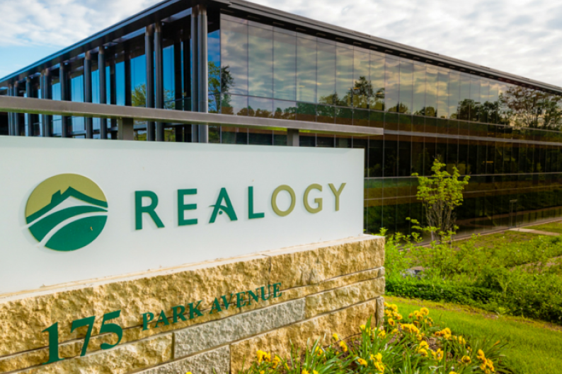
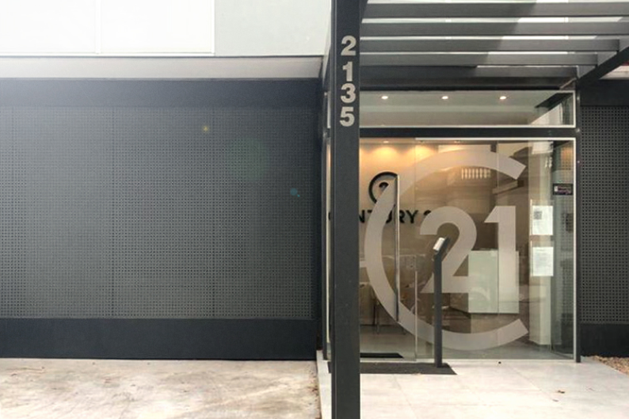

<html lang="en">
<head>
    <meta charset="UTF-8">
    <meta name="viewport" content="width=device-width, initial-scale=1.0">
    <link rel="stylesheet" href="style/fonts.css">
    <link rel="stylesheet" href="style/footer.css">
    <link rel="stylesheet" href="style/case.css">
    <link rel="stylesheet" href="style/titleCase.css">
    <link rel="stylesheet" href="style/responsiveNav.css">
    <link rel="stylesheet" href="style/nav.css">
    <script src="js/language.js"></script>

    <title>Century 21</title>
</head>
<body onload="setLanguage()">

    <script
      type="text/javascript"
      src="https://cdnjs.cloudflare.com/ajax/libs/handlebars.js/4.7.6/handlebars.min.js"
    ></script>

    <script type="text/javascript" src="js/case.js"></script>
    <script type="text/javascript" src="js/responsiveNav.js"></script>
    <script type="text/javascript" src="js/titleCase.js"></script>
    <script type="text/javascript" src="js/footer.js"></script>
    <script type="text/javascript" src="js/nav.js"></script>

    <div id="navResp" class="navResp"></div>
    <header id="nav"></header>

    <script type="text/javascript">
        var navTemplate = Handlebars.templates["nav"];
  
        data = {
              es: {
                  home: 'Inicio',
                  mision: 'Mision',
                  approach: 'Enfoque',
                  team: 'Equipo',
                  cases: 'Proyectos'
              },
              en: {
                  home: 'Home',
                  mision: 'Mission',
                  approach: 'Approach',
                  team: 'Team',
                  cases: 'Cases'
              }
  
          }
          var language = !localStorage.getItem('language') ? 'es' : localStorage.getItem('language')
  
          document.getElementById('nav').innerHTML += navTemplate(data[language])
  
          document.getElementById('language').value = language
      </script>

    <div id="title"></div>

    <script type="text/javascript">
        var navTemplate = Handlebars.templates["responsiveNav"];

        data = {
            es: {
                home: 'Inicio',
                mision: 'Mision',
                approach: 'Enfoque',
                team: 'Equipo',
                cases: 'Proyectos'
            },
            en: {
                home: 'Home',
                mision: 'Mission',
                approach: 'Approach',
                team: 'Team',
                cases: 'Cases'
            }

        }

        var language = !localStorage.getItem('language') ? 'es' : localStorage.getItem('language')


        document.getElementById('navResp').innerHTML += navTemplate(data[language])
    </script>

    <script type="text/javascript">
        var navTemplate = Handlebars.templates['titleCase'];
        var data = {
            optionalLine:'',
            needLine: 'Century 21'
        }

        document.getElementById('title').innerHTML += navTemplate(data)
    </script>

    <div id="proyectIvascular"></div>

    <script type="text/javascript">
        var navTemplate = Handlebars.templates['case'];
        var texto_iv = "<p>WWC trabaja en el asesoramiento de la franquicia americana Century 21 de bienes raíces. Al igual que la Salud, consideramos que la vivienda es una"
        texto_iv += "necesidad básica de todos ser humano y por eso que es de nuestro interés.<br>"
        texto_iv += "C21, fundada en 1971, es la red internacional de soluciones inmobiliarias con más reconocimiento a nivel mundial que busca mejorar y cambiar la vida"
        texto_iv += "de las personas en relación a su vivienda. Experiencia, calidad y servicio han permitido que en 50 años tengan presencia en 83 países, con más de"
        texto_iv += "10.000 oficinas y alrededor de 125.000 agentes en todo el mundo.</p>"
        texto_iv += "<p>WWC contribuye con C21 al desarrollo de proyectos y soluciones Inmobiliarias innovadoras, integrales y ajustadas a las necesidades de sus clientes, a través de un servicio de alta calidad y desarrollo de confianza, credibilidad y satisfacción por parte de nuestros asesores que nos permita consolidar relaciones de largo plazo.</p>"
        
        var texto_en = '<p>WWC works in advising the American Century 21 real estate franchise. Like Health, we consider that housing is a basic need of all to be human and that is why it is in our interest. C21, founded in 1971, is the international network of real estate solutions with the most worldwide recognition that seeks to improve and change life of people in relation to their home. Experience, quality and service have allowed them to have a presence in 83 countries in 50 years, with more than 10,000 offices and around 125,000 agents worldwide.</p> <p>WWC contributes with C21 to the development of innovative, comprehensive and adjusted Real Estate projects and solutions to the needs of its clients, through a high quality service and the development of trust, credibility and satisfaction on the part of our advisors that allows us to consolidate relationships for the long term.</p>' 

        var img_1 = ''
        var img_2 = ''
        var nextPro = 'Century 21'
        var sectoPro = 'Salud'
        var sectoProEn = 'Health'
        var logPro = ''

        var cliente = 'Cliente'
        var sector = 'Sector'
        var cliente_en = 'Client'

        var path ='saludPrevent.html'


        var data = {
            es: {
                texto: texto_iv,
                img1: img_1,
                img2: img_2,
                nextProyect: nextPro,
                sectorProyect: sectoPro,
                logoProyect: logPro,
                cliente: cliente,
                sector: sector,
                path: path
            },
            en: {
                texto: texto_en,
                img1: img_1,
                img2: img_2,
                nextProyect: nextPro,
                sectorProyect: sectoProEn,
                logoProyect: logPro,
                cliente: cliente_en,
                sector: sector,
                path: path
            }            
        }

        var language = !localStorage.getItem('language') ? 'es' : localStorage.getItem('language')

        document.getElementById('proyectIvascular').innerHTML += navTemplate(data[language])
    </script>

    <footer id='form'></footer>

    <script type="text/javascript">
        var footerTemplate = Handlebars.templates["footer"];
  
        var data = {
              es: {
                  text_1: '¿Construimos algo grande juntos?',
                  name: 'Nombre y Apellido',
                  mail: 'Correo Electronico',
                  mensaje: 'Mensaje'
              },
              en: {
                  text_1: 'Do we build something big together? ',
                  name: 'Full Name',
                  mail: 'E-Mail',
                  mensaje: 'Message'
              }
          }
  
          var language = !localStorage.getItem('language') ? 'es' : localStorage.getItem('language')
  
          document.getElementById('form').innerHTML += footerTemplate(data[language])
      </script>

    <script type="text/javascript" src="js/responsiveNavUtility.js"></script>
</body>
</html>